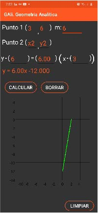

- 
Acerca de:
Gali. Geometria analítica, es una App nativa, esta fue desarrollada con el lenguaje de programación Java. Esta aplicación es de código abierto y gratis, por lo que aquí dejare el archivo para el APK y el proyecto. Actualmente aún no está del todo terminada, y solo cuenta con las funcionalidad que se explicaran aquí.
Aplicación: https://mega.nz/file/vHg3zTKb#aRgyugW-QoYtyenUUQ3ufK87cWqFvICmqKsTEoxvEj0
Proyecto: https://mega.nz/folder/nKQAjKja#CVO54gSDpoQS4k1M_qhkLQ
Distancia entre dos puntos
Punto medio
En este espacio puedes calcular el punto medio entre dos puntos. Sin embargo, también puedes calcular los extremos. Para poder calcular una cosa u otra, solo tienes que ingresar 2 de puntos y se calculara el tercero. En caso que ingreses mal los datos se te notificaran que revises los campos.
Punto pendiente
Esta funcionalidad de la aplicación, es un poco más compleja que las anteriores. Para comenzar es importante decir que en todas y cada una de las formas de uso, se graficara un segmento de recta donde interseca la recta en los ejes.
Formas de uso:
1. Pendiente:
En este caso, tendrás que ingresar dos puntos y al dar clic en calcular, la aplicación calculara la pendiente, la ecuación canónica de la recta y la ecuación general.
2. Punto pendiente:
Deberás ingresar un punto y la pendiente de la recta. La aplicación calculara la ecuación Canónica y General.
3. Ecuación Canónica:
Apelando a la ley de signos, es importante que identifique que afuera de los paréntesis hay un signo de menos, por lo que sí tu ecuación tiene un signo positivo “y + 3 = 4 (x - 2)” lo deberás convertir a “y - (-3) = 4 (x - 2)”. La aplicación generara la ecuación general.
Distancia de un punto a una recta
Circunferencia
1. Ecuación canónica.
A un lado de “Ecuación Canónica” podrás notar un símbolo de cuadrado, este servirá para poder elevar al cuadrado el resultado de la ecuación “el radio”.
En el caso de la ecuación canónica, los signos son botones, por lo que si los presionas podrás cambiar el signo.
Cuando se llenan los campo de la ecuación canoníca y se presiona calcular, la App calculara el centro del círculo, la ecuación general y graficara el circulo en le plano cartesiano.
2. Ecuación general.
En esta funcionalidad si se tendrá que tener en cuenta la ley de los sinos.
Cuando se llenan los campos y se presiona calcular, se calculara la ecuación Canoníca, centro y radio así como se graficara la circunferencia.
3. Centro y radio
Se calculara la ecuación Canónica, General y se graficara.
Parábola
Todas las “x” de este apartado, se pueden cambiar a “y” pues son botones, con ello puedes hacer que la parábola pueda abrir a diferentes lados de los cuadrantes.
Los signos en la Ecuación Canoníca, también se pueden cambiar tocándolos.
Todos los espacios se llenaran cuando presiones el botón de calcular, es decir se calculara el vértice, foco, directriz, ecuación canoníca y ecuación general.
1. Ecuación Canónica de la parábola.
Solo deberás rellenar los campos de “h”, “P” y “k”; y presionar el botón de calcular.
2. Ecuación General de la parábola.
Tendrás que llenas los campos “B”, “C” y “D”. “x” también puede tener coeficiente
3. Foco y varice.
Deberás de indicar las coordenadas del foco y del vértice, para calcular las demás partes.
4. Vértice y directriz
El vértice es una constante, por lo que tendrás que ingresar el valor de la contante y la coordenada del vértice.
5. Foco y directriz
Ingresaras la constante de la directriz y la coordenada del foco.
6. Indicador.
Podrás notar una flecha que cambia según la función que introduzcas, esta indicara la dirección en que abrirá la parábola